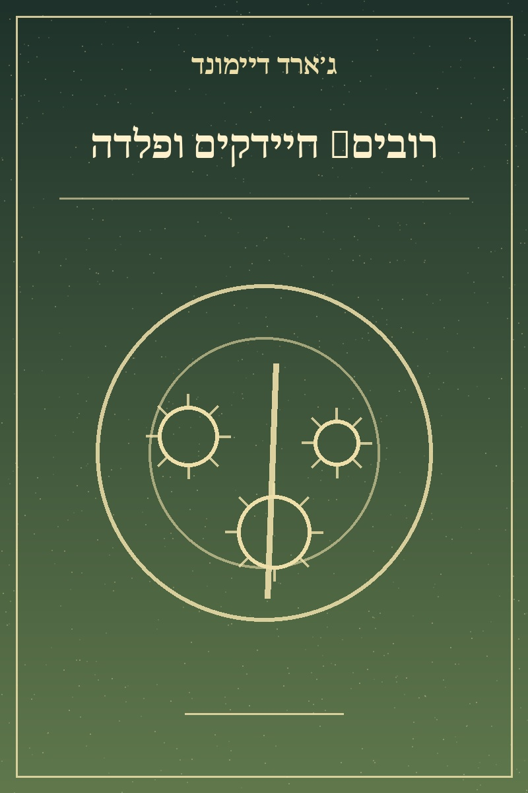

רובים, חיידקים ופלדה
מחבר: ג׳ארד דיימונד
שנת פרסום מקורית: 1997
קטגוריה: היסטוריה
תקציר הספר
ספר עיון הבוחן כיצד גאוגרפיה, גידולים חקלאיים, בעלי חיים ומחלות תרמו להבדלים בהתפתחות חברות אנושיות. המחבר מציע הסבר היסטורי רחב לפערי כוח בין אזורים בעולם.
חזרה לקטלוג הספרים